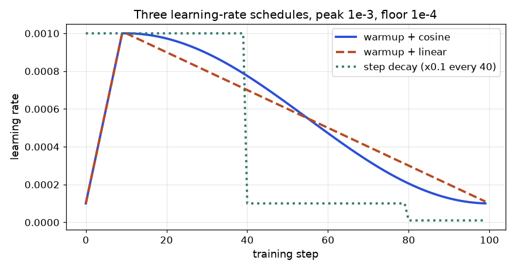

In this chapter
- 3.1 Loss Functions: Defining "Wrong"
- 3.2 Optimizers and Learning-Rate Schedules
- 3.3 Initialization and Normalization
- 3.4 Regularization: Stopping the Model from Memorizing
- 3.5 Going Further: Four Norms on One Tensor, Decoupled Weight Decay, Schedules and Label Smoothing
- Chapter recap
- Practice set
- Prompt pack
You now know how one training step works. Real projects fail or succeed on the choices around that step: which loss, which optimizer, how fast to learn, how to start the weights, and how to stop the model from memorizing. By the end of this chapter you will be able to compute the main losses by hand, explain why Adam moves differently from plain SGD, build a warmup-plus-cosine schedule, show with numbers why a bad initialization kills a deep network, compute four normalizations on a small matrix, and use weight decay or early stopping when a model overfits. Basics of cross-entropy and optimizers are in the learner's Math PDF (Pillar 2.7); here we compute with them and add the practical rules.
3.1 Loss Functions: Defining "Wrong"
Words you need
| Word | Plain meaning |
|---|---|
| Logit | The raw score before softmax or sigmoid |
| Class imbalance | One class is much more common than another (99% normal, 1% fraud) |
| Embedding | A vector (list of numbers) that represents an item; similar items get close vectors |
| Margin | A safety gap we demand between two distances |
The losses
| Loss | Formula | Use it for |
|---|---|---|
| MSE | mean((pred − true)²) | Regression (predict a number) |
| Cross-entropy | −ln(p of the true class) | Classification |
| Focal | −(1 − pₜ)^γ · ln(pₜ) | Classification with many easy examples and few hard ones (detection) |
| Contrastive | similar: ½d²; different: ½·max(0, m − d)² | Learning embeddings from pairs |
| Triplet | max(0, d(a,p) − d(a,n) + margin) | Learning embeddings from (anchor, positive, negative) |
pₜ means "the probability the model gave to the correct class". d is the distance between two embeddings. γ (gamma) is a knob; 2 is typical.
Problem 3.1.1 Compute MSE and cross-entropy for small cases.
| Formula | MSE = (1/n) Σ (pred − true)²; CE = −ln(pₜ). |
|---|---|
| Plug in | Predictions (2.5, 0.0, 4.0) and truths (3.0, 0.5, 5.0). Errors are −0.5, −0.5, −1.0. For CE, the model gave (0.7, 0.2, 0.1) and the true class is class 0. |
| Compute | Squares: 0.25, 0.25, 1.0. Mean = 1.5 / 3 = 0.5. CE = −ln(0.7) = 0.3567. |
| Answer | MSE is 0.5 (units squared) and CE is 0.3567. |
| Check | If the model gave the true class 1.0, CE would be −ln(1) = 0. If it gave 0.01 it would be 4.6. So 0.7 gives a small loss, which fits. |
| Why it matters | CE explodes toward infinity as pₜ → 0, so confident wrong answers are punished hard. That is exactly what we want in classification. |
Problem 3.1.2 Show how focal loss (γ = 2) reduces the weight of easy examples.
| Formula | FL = (1 − pₜ)² × (−ln pₜ). |
|---|---|
| Step 1 | Easy example, pₜ = 0.9: CE = 0.1054. Factor (1−0.9)² = 0.01. FL = 0.001054. |
| Step 2 | Hard example, pₜ = 0.1: CE = 2.3026. Factor (0.9)² = 0.81. FL = 1.8651. |
| Answer | Easy example loss drops 100 times (0.1054 to 0.00105); hard example loss drops only 19% (2.3026 to 1.8651). |
| Check | The ratio hard/easy was 2.3026/0.1054 = 21.8 under CE and becomes 1.8651/0.00105 = 1768 under focal loss, so the hard examples dominate. |
| Interpretation | In an object detector, 99.9% of image locations are easy background. Plain CE would let thousands of easy examples drown out the few real objects. Focal loss turns their volume down. |
Problem 3.1.3 Compute contrastive and triplet loss.
| Contrastive (margin m = 1, d = 0.4) | Similar pair: ½ × 0.4² = 0.08. Different pair: ½ × max(0, 1 − 0.4)² = ½ × 0.36 = 0.18. |
|---|---|
| Triplet (margin 0.5) | d(a,p) = 0.5, d(a,n) = 0.8: max(0, 0.5 − 0.8 + 0.5) = 0.2. If the negative were closer, d(a,n) = 0.2: max(0, 0.5 − 0.2 + 0.5) = 0.8. |
| Answer | The loss is higher exactly when the embedding is wrong: when different items are too close. |
| Check | If d(a,n) − d(a,p) ≥ margin the triplet loss is exactly 0 (the case is solved). |
| Interpretation | These losses are used when you want a space where "same person" photos are near and "different person" photos are far. Face search and product search use them. |
import numpy as np
print("MSE", np.mean((np.array([2.5,0.0,4.0])-np.array([3.0,0.5,5.0]))**2))
p = np.array([0.7,0.2,0.1]); print("CE true=0", -np.log(p[0]))
for pt in [0.9,0.1]:
ce = -np.log(pt); print("p_t", pt, "CE", round(ce,4), "focal g=2", round((1-pt)**2*ce,5))
d = 0.4; m = 1.0
print("contrastive similar", 0.5*d**2, "dissimilar", 0.5*max(0,m-d)**2)
print("triplet", max(0,0.5-0.8+0.5), max(0,0.5-0.2+0.5))MSE 0.5
CE true=0 0.35667494393873245
p_t 0.9 CE 0.1054 focal g=2 0.00105
p_t 0.1 CE 2.3026 focal g=2 1.86509
contrastive similar 0.08000000000000002 dissimilar 0.18
triplet 0.19999999999999996 0.8(The tiny 0.08000000000000002 is floating-point rounding, not an error.)
Which loss for which job
| Task | Output layer | Loss |
|---|---|---|
| Predict a price | Linear (none) | MSE (or MAE/Huber if outliers) |
| Yes/no | 1 sigmoid | Binary cross-entropy |
| One of K classes | K logits | Softmax cross-entropy |
| Many labels at once | K sigmoids | BCE per label |
| Rare objects (detection) | per-location | Focal |
| Similarity search | embedding | Contrastive/triplet (or InfoNCE, Chapter 12) |
Connection to the real job
The loss is the first thing you choose and the first thing a reviewer asks about. In PyTorch, nn.CrossEntropyLoss expects raw logits, not probabilities (it applies log-softmax inside). Feeding it probabilities is a classic silent bug.
Applications
- Deep learning: classification, detection (focal loss in RetinaNet), segmentation.
- Data science: fraud with heavy imbalance.
- GenAI: language models use cross-entropy on the next token (see
study/genai/). - Search/recommenders: triplet and contrastive losses for embeddings.
CrossEntropyLoss. Both train, but worse, with no error.Check yourself
- CE loss when the model gave the true class probability 0.5? Answer:
−ln 0.5 = 0.693. - Which hidden quantity does focal loss shrink? Answer: the loss of easy, already-confident examples.
- Triplet loss is 0 when what is true? Answer: the negative is farther than the positive by at least the margin.
3.2 Optimizers and Learning-Rate Schedules
Definitions
- SGD (stochastic gradient descent):
w ← w − lr·g, wheregis the gradient on a small random batch. - Momentum:
v ← β·v + g, thenw ← w − lr·v. Typicalβ = 0.9. - RMSProp: keep a running average of squared gradients
s ← ρ·s + (1−ρ)·g², thenw ← w − lr·g/(√s + ε). - Adam: momentum plus RMSProp, with bias correction:
m ← β₁m + (1−β₁)g,v ← β₂v + (1−β₂)g²,m̂ = m/(1−β₁ᵗ),v̂ = v/(1−β₂ᵗ),w ← w − lr·m̂/(√v̂ + ε). Typicalβ₁ = 0.9,β₂ = 0.999,ε = 1e-8. - AdamW: Adam where weight decay is applied directly to the weights,
w ← w − lr·(m̂/(√v̂+ε) + λ·w), rather than being mixed into the gradient. It is the default for transformers.
We use t for the step number, starting at 1. The bias correction exists because m and v start at 0, so early averages are too small; dividing by (1−βᵗ) fixes that.
Problem 3.2.1 Do the first Adam step by hand for a function with a steep and a flat direction: f(x,y) = x² + 10y², start (1,1), lr = 0.1.
| Step 1 | Gradient g = (2x, 20y) = (2, 20). |
|---|---|
| Step 2 | m = 0.1·g = (0.2, 2.0), v = 0.001·g² = (0.004, 0.4). |
| Step 3 | Bias correction at t=1: m̂ = m/0.1 = (2, 20), v̂ = v/0.001 = (4, 400). |
| Step 4 | Step = lr·m̂/√v̂ = 0.1 × (2/2, 20/20) = (0.1, 0.1). |
| Answer | Adam moves both coordinates by exactly 0.1, even though one gradient is 10 times larger. |
| Check | The code below prints step [0.1 0.1]. |
| Interpretation | Plain SGD with the same lr = 0.1 would move (0.2, 2.0): ten times more in y, which would overshoot wildly (it jumps from y=1 to y=−1, then back to +1, bouncing forever without settling). Adam's per-coordinate scaling is why it is easy to use on awkward problems. |
Problem 3.2.2 Compare the four optimizers for 30 steps on the same function, starting at (1,1).
| Plug in | SGD lr=0.09; momentum lr=0.02, β=0.9; RMSProp lr=0.05, ρ=0.9; Adam lr=0.1. |
|---|---|
| Compute | Run the code. |
| Answer | After 30 steps: SGD f = 2.2e-05, RMSProp 3.8e-04, Adam 0.0127, momentum 0.10. |
| Check | Start loss is f(1,1) = 11, so all four made large progress. |
| Interpretation | Honest result: on this smooth toy problem plain SGD with a well-chosen rate wins. Adam with a constant lr = 0.1 keeps stepping about 0.1 even near the minimum, so it jitters around it (w ≈ −0.034). Momentum with these settings overshoots and oscillates. In real deep learning, SGD's good rate is hard to find, while Adam works over a wide range of settings, which is why people use it. Use a schedule (below) so that the step shrinks at the end. |
grad = lambda w: np.array([2*w[0], 20*w[1]])
f = lambda w: w[0]**2 + 10*w[1]**2
def run(name, steps=30):
w = np.array([1.,1.]); v = np.zeros(2); s = np.zeros(2); m = np.zeros(2); vv = np.zeros(2)
for t in range(1, steps+1):
g = grad(w)
if name == "sgd": w = w - 0.09*g
if name == "mom": v = 0.9*v + g; w = w - 0.02*v
if name == "rms": s = 0.9*s + 0.1*g*g; w = w - 0.05*g/(np.sqrt(s)+1e-8)
if name == "adam":
m = 0.9*m + 0.1*g; vv = 0.999*vv + 0.001*g*g
mh = m/(1-0.9**t); vh = vv/(1-0.999**t); w = w - 0.1*mh/(np.sqrt(vh)+1e-8)
return w, f(w)
for n in ["sgd","mom","rms","adam"]: print(n, run(n))sgd (array([0.00259666, 0.00123794]), np.float64(2.2067613579465364e-05))
mom (array([0.1851202 , 0.08200961]), np.float64(0.10152525663190662))
rms (array([0.00584382, 0.00584382]), np.float64(0.000375652525585838))
adam (array([-0.03396752, -0.03396752]), np.float64(0.012691714688971227))Learning-rate schedules
A schedule changes lr during training. Three you must know:
- Warmup: start with a tiny
lrand rise linearly for the first few percent of steps. Early on, Adam's statistics are noisy and weights are random, so big steps can blow up the model. - Cosine decay: after warmup,
lr(t) = ½·peak·(1 + cos(π·progress)), falling smoothly to 0. - One-cycle: rise to a high peak and then fall far below the start (often used with SGD for fast training).
Problem 3.2.3 Compute a warmup-plus-cosine schedule: peak lr = 0.001, 100 steps, warmup 10 steps. What is lr at steps 0, 4, 9, 10, 30, 55, 99?
| Formula | Warmup (t < 10): peak·(t+1)/10. After: ½·peak·(1 + cos(π·(t−10)/90)). |
|---|---|
| Plug in | At t=4: 0.001·5/10 = 0.0005. At t=30: progress 20/90 = 0.2222, cos(π·0.2222) = 0.7660, so ½·0.001·1.7660 = 0.000883. At t=55: progress 0.5, cos(π/2) = 0, so 0.0005. |
| Answer | Steps 0, 4, 9, 10, 30, 55, 99 give 0.0001, 0.0005, 0.001, 0.001, 0.000883, 0.0005, 0.0. |
| Check | The code prints exactly those values (at the last step the true value is 3e-07, which rounds to 0.0 at 6 decimals, because cos is almost −1 there). |
| Interpretation | The learning rate climbs for 10 steps, touches the peak, and then glides down. Think of a car: gentle start, cruise, gentle stop. |
def sched(t, T=100, warm=10, peak=1e-3):
if t < warm: return peak*(t+1)/warm
return 0.5*peak*(1+np.cos(np.pi*(t-warm)/(T-warm)))
print([round(float(sched(t)), 6) for t in [0,4,9,10,30,55,99]])[0.0001, 0.0005, 0.001, 0.001, 0.000883, 0.0005, 0.0]The picture
lr
peak | ____
| / ‾‾‾--__
| / ‾‾--__
| / ‾‾--__
0 |/______________________________________‾ step
warmup cosine decayReal-world mapping
| Item | Example value | Where it appears in the job |
|---|---|---|
AdamW, lr=3e-4, warmup 5% | typical starting point | Fine-tuning scripts and training configs |
SGD + momentum 0.9, lr=0.1 | classic image training | ResNet-style training recipes |
| Cosine schedule | one line of config | torch.optim.lr_scheduler (not run here) |
| Batch size 32 vs 256 | change lr with it | Scaling a job to more GPUs |
Applications
- Deep learning: AdamW + warmup + cosine is the standard recipe for transformers.
- Computer vision: SGD + momentum + step/cosine/one-cycle for CNNs.
- MLOps: learning rate is the first hyperparameter to tune in a sweep.
weight_decay argument as L2 regularization and expecting the same behaviour as AdamW. In classic Adam the decay is added to the gradient and then rescaled by 1/√v, so it behaves differently. Use AdamW when you want decoupled decay.Check yourself
- Why does Adam divide by
√v̂? Answer: to scale the step per weight, so steep/noisy directions get smaller steps. - Why use warmup? Answer: early statistics are unreliable; small first steps avoid divergence.
- What does the bias correction fix? Answer:
mandvstart at 0, so early values are too small.
3.3 Initialization and Normalization
Initialization
- Xavier (Glorot): weights with variance
2/(fan_in+fan_out). Designed for tanh/sigmoid. The simpler rule1/fan_inis the LeCun form; for square layers (fan_in = fan_out), as in the demo below, the two are identical. - He (Kaiming): variance
2/fan_in. Designed for ReLU, which zeroes half of the values and therefore needs twice the variance to keep the volume.
fan_in = number of inputs to a neuron.
Problem 3.3.1 Pass a random batch through 10 layers (width 256) and measure the standard deviation of the activations after layers 1, 5 and 10, under four setups.
| Plug in | Input: 512 random vectors, std = 1. Setups: tanh with weights of std 0.01; tanh with Xavier; ReLU with Xavier; ReLU with He. |
|---|---|
| Compute | Run the code. |
| Answer | Table below. |
| Setup | After layer 1 | After layer 5 | After layer 10 |
|---|---|---|---|
| tanh, std 0.01 | 0.1564 | 0.0001 | 0.0000 |
| tanh, Xavier | 0.6287 | 0.3232 | 0.2262 |
| ReLU, Xavier | 0.5871 | 0.1322 | 0.0282 |
| ReLU, He | 0.8253 | 0.8854 | 0.7753 |
- Check The ReLU+Xavier row shrinks by about
×0.7per layer (each ReLU halves the signal power, so the standard deviation drops by√½ = 0.707).0.5871 × 0.707⁹ ≈ 0.026, close to the printed0.0282. - Interpretation Tiny weights make the signal vanish within a few layers (and the gradients with it). Matching the init to the activation, He for ReLU, keeps the signal alive. The code is below.
rng = np.random.default_rng(0)
x0 = rng.normal(size=(512,256))
def deep(act, scale, L=10):
x = x0; out = []
for l in range(L):
W = rng.normal(size=(256,256))*scale(256)
x = act(x@W); out.append(x.std())
return np.array(out)
relu = lambda z: np.maximum(0,z)
print("tanh std0.01", deep(np.tanh, lambda n: 0.01)[[0,4,9]])
print("tanh xavier ", deep(np.tanh, lambda n: np.sqrt(1/n))[[0,4,9]])
print("relu xavier ", deep(relu, lambda n: np.sqrt(1/n))[[0,4,9]])
print("relu he ", deep(relu, lambda n: np.sqrt(2/n))[[0,4,9]])tanh std0.01 [0.1564 0.0001 0. ]
tanh xavier [0.6287 0.3232 0.2262]
relu xavier [0.5871 0.1322 0.0282]
relu he [0.8253 0.8854 0.7753]Normalization layers
A normalization layer rescales activations to mean 0 and variance 1 (then optionally applies a learned scale γ and shift β). They differ in which numbers are grouped together:
| Layer | Normalizes over | Typical home |
|---|---|---|
| BatchNorm | the batch, for each feature | CNNs |
| LayerNorm | all features of one example | Transformers, RNNs |
| GroupNorm | groups of channels in one example | CNNs with small batches |
| RMSNorm | like LayerNorm but no mean subtraction: x/√(mean(x²)+ε) | Modern LLMs |
BatchNorm depends on batch statistics, so its behaviour differs between training (uses batch stats) and inference (uses running averages). That is the cause of many "works in training, fails in production" bugs. LayerNorm, GroupNorm and RMSNorm do not depend on the batch.
Problem 3.3.2 Normalize a tiny matrix of 4 examples × 3 features: rows (1,2,3), (2,4,6), (3,6,12), (0,0,0).
| Formula | (x − mean)/√(var + ε), with ε = 1e-5. |
|---|---|
| Step 1 (LayerNorm, row 0) | mean = 2, variance = ((−1)²+0²+1²)/3 = 0.6667, std = 0.8165. Values: (−1/0.8165, 0, 1/0.8165) = (−1.2247, 0, 1.2247). |
| Step 2 (BatchNorm, feature 0) | the column is (1,2,3,0), mean 1.5, variance (0.25+0.25+2.25+2.25)/4 = 1.25, std = 1.118. Row 0 gives (1−1.5)/1.118 = −0.4472. |
| Step 3 (RMSNorm, row 0) | mean(x²) = (1+4+9)/3 = 4.667, root = 2.1602. Row (1,2,3)/2.1602 = (0.4629, 0.9258, 1.3887). |
| Answer | The printed matrices below agree. LayerNorm made rows 0 and 1 identical, (−1.2247, 0, 1.2247), because row 1 is just row 0 times 2. RMSNorm does the same but keeps the sign and ratio pattern without centering. |
| Check | Each LayerNorm row has mean 0 and (nearly) variance 1; the row of zeros stays 0 thanks to ε in the denominator (no division by zero). |
| Interpretation | LayerNorm removes the scale of each example, so a request whose features are all twice as large looks the same to the next layer. BatchNorm instead compares each example against its batch. |
X = np.array([[1.,2,3],[2,4,6],[3,6,12],[0,0,0]]); eps = 1e-5
bn = (X-X.mean(0))/np.sqrt(X.var(0)+eps)
ln = (X-X.mean(1,keepdims=True))/np.sqrt(X.var(1,keepdims=True)+eps)
rms = X/np.sqrt((X**2).mean(1,keepdims=True)+eps)
print("BN\n",bn); print("LN\n",ln); print("RMS\n",rms)
c = np.array([1.,3,10,14]); g = c.reshape(2,2)
print("GN", ((g-g.mean(1,keepdims=True))/np.sqrt(g.var(1,keepdims=True)+eps)).ravel())BN
[[-0.4472 -0.4472 -0.5071]
[ 0.4472 0.4472 0.169 ]
[ 1.3416 1.3416 1.5213]
[-1.3416 -1.3416 -1.1832]]
LN
[[-1.2247 0. 1.2247]
[-1.2247 0. 1.2247]
[-1.069 -0.2673 1.3363]
[ 0. 0. 0. ]]
RMS
[[0.4629 0.9258 1.3887]
[0.4629 0.9258 1.3887]
[0.378 0.7559 1.5119]
[0. 0. 0. ]]
GN [-1. 1. -1. 1.]For GroupNorm we took one example with 4 channels (1,3,10,14) and split them into 2 groups: (1,3) and (10,14). Each group is normalized alone, so each becomes (−1, +1).
The picture
Input tensor: batch N × features C
BatchNorm: normalize each COLUMN (across the N examples)
LayerNorm: normalize each ROW (across the C features)
GroupNorm: normalize each ROW, but separately inside groups of channelsConnection to the real job
Every transformer layer has LayerNorm or RMSNorm (Chapter 11). CNNs use BatchNorm (Chapter 6). When someone says "set the model to eval mode", the main reason is BatchNorm and dropout behaving differently in training and inference.
Applications
- Computer vision: BatchNorm in ResNets; GroupNorm in detection and diffusion U-Nets.
- GenAI: RMSNorm in recent open large language models.
- MLOps: debugging train/serve differences that come from BatchNorm statistics.
model.eval() at inference. BatchNorm then uses the statistics of the tiny live batch (maybe size 1), and predictions become unstable.Check yourself
- Which initialization goes with ReLU? Answer: He, variance
2/fan_in. - Which normalization uses the batch? Answer: BatchNorm.
- Why does
εappear in the formulas? Answer: to avoid dividing by zero when variance is 0.
3.4 Regularization: Stopping the Model from Memorizing
Words you need
| Word | Plain meaning |
|---|---|
| Overfitting | Low loss on training data, much higher on new data |
| Validation set | Data kept aside to measure how the model does on new data during training |
| Weight decay | A pull that shrinks weights toward zero at every step |
| Dropout | Randomly switching off neurons during training |
The tools
- L2 / weight decay:
w ← w − lr·(g + λ·w). Large weights are penalized. - L1:
w ← w − lr·(g + λ·sign(w)). Pushes small weights to exactly zero (sparse). - Dropout: during training, zero each neuron with probability
p, and scale the survivors by1/(1−p)("inverted dropout") so the average stays the same. At inference, do nothing. - Early stopping: watch validation loss; stop when it has not improved for
patiencechecks, and keep the best weights. - Data augmentation: make new training examples by changing old ones (flip, crop, color jitter for images).
- Label smoothing: replace the hard target
(1,0,0)with(1−ε+ε/K, ε/K, ε/K); stops the model from becoming over-confident. - Mixup: train on
λ·xₐ + (1−λ)·x_bwith labels mixed the same way. CutMix: paste a rectangle of one image onto another; the label is mixed in proportion to the area.
Problem 3.4.1 Apply L2 and L1 updates by hand for w = (2.0, −0.5), lr = 0.1, λ = 0.1, with zero data gradient (to see the pull alone).
| Step 1 (L2) | w − lr·λ·w = w·(1 − 0.01) = (1.98, −0.495). |
|---|---|
| Step 2 (L1) | w − lr·λ·sign(w) = (2.0 − 0.01, −0.5 + 0.01) = (1.99, −0.49). |
| Answer | L2 shrinks in proportion to the size (0.02 and 0.005 removed); L1 removes a constant 0.01 from each. |
| Check | The code prints [1.98 -0.495] and [1.99 -0.49]. |
| Interpretation | Because L1 removes the same amount each step, small weights hit exactly zero first. L2 gets small weights closer to zero but rarely reaches it. L1 gives sparse models; L2 gives smooth, small ones. |
Problem 3.4.2 Work out dropout, label smoothing and mixup with real numbers.
| Step 1 (dropout, p = 0.5) | Activations (1,2,3,4,5,6), mask (1,1,0,1,0,0). Survivors times 1/(1−0.5) = 2: (2, 4, 0, 8, 0, 0). |
|---|---|
| Step 2 (label smoothing, ε = 0.1, K = 3) | Target (1,0,0) becomes (0.9 + 0.0333, 0.0333, 0.0333) = (0.9333, 0.0333, 0.0333). With the model's output (0.7, 0.2, 0.1) the smoothed loss is −(0.9333·ln 0.7 + 0.0333·ln 0.2 + 0.0333·ln 0.1) = 0.3329 + 0.0536 + 0.0768 = 0.4633. |
| Step 3 (mixup, λ = 0.7) | Mix inputs (1,0) and (0,1) into (0.7, 0.3), and the labels the same way into (0.7, 0.3). |
| Step 4 (CutMix) | A 16×16 patch pasted on a 32×32 image replaces 256/1024 = 25% of it, so the label becomes 75% original and 25% pasted. |
| Answer | All four match the code output below (0.4633 for the smoothed loss). |
| Check | The smoothed target sums to 0.9333+0.0333+0.0333 = 1; dropout kept the same average magnitude in expectation (½ × 2 = 1). |
| Interpretation | Label smoothing makes the loss slightly higher (0.4633 vs 0.3567 for the hard target) because it refuses to reward 100% confidence. |
w = np.array([2.0,-0.5]); lr = 0.1; lam = 0.1
print("L2 step", w-lr*lam*w, "L1 step", w-lr*lam*np.sign(w))
r = np.random.default_rng(1); h = np.array([1.,2,3,4,5,6]); mask = (r.random(6) > 0.5)
print("mask", mask.astype(int), "dropped", h*mask/0.5)
K = 3; t = np.array([1,0,0])*(1-0.1) + 0.1/K
print("smooth target", t, "loss", -(t*np.log(np.array([0.7,0.2,0.1]))).sum())
print("mixup x", 0.7*np.array([1.,0]) + 0.3*np.array([0.,1]))L2 step [ 1.98 -0.495] L1 step [ 1.99 -0.49]
mask [1 1 0 1 0 0] dropped [2. 4. 0. 8. 0. 0.]
smooth target [0.9333 0.0333 0.0333] loss 0.46329738119042185
mixup x [0.7 0.3]Problem 3.4.3 See overfitting and its cures on real data. We use 40 training points of the moons problem (noise 0.35), a network 2 → 64 → 64 → 2, 3000 full-batch steps, lr = 0.1, tested on 600 fresh points.
| Plug in | Train with no weight decay, then with weight decay λ = 0.01 (added to the gradient of the weights). |
|---|---|
| Compute | Print train loss, validation loss and validation accuracy. |
| Answer |
| Step | No decay: train | No decay: val loss | No decay: val acc | Decay 0.01: train | Decay: val loss | Decay: val acc |
|---|---|---|---|---|---|---|
| 0 | 0.451 | 0.477 | 77.5% | 0.451 | 0.477 | 77.5% |
| 500 | 0.212 | 0.392 | 80.3% | 0.242 | 0.342 | 84.3% |
| 1000 | 0.155 | 0.431 | 83.3% | 0.215 | 0.329 | 84.5% |
| 2000 | 0.116 | 0.522 | 82.2% | 0.214 | 0.324 | 84.7% |
| 3000 | 0.087 | 0.615 | 81.3% | 0.213 | 0.322 | 84.5% |
- Check Without decay, training loss keeps falling (0.45 to 0.087) but validation loss rises after step ~400 (best 0.387 at step 400, rising to 0.615). That gap is overfitting. With decay, both curves flatten and validation loss stays near 0.32.
- Interpretation The undecayed model memorized noise in 40 points. Early stopping would have saved the weights from step ~400 (validation loss 0.387). Weight decay reached a better validation loss (0.322) and held it. Both are valid; use them together in practice.

How to read it: horizontal axis is training steps; vertical axis is the loss (lower is better). Orange/second line is validation. On the left the two lines separate: the train line keeps sinking while validation turns upward after the dashed line. On the right they stay close together.
Connection to the real job
Overfitting is the default state of a neural network, because it has so many parameters. Your first look at any training run is the train-versus-validation gap. Treat it like comparing a test environment with production: if the numbers differ a lot, the test was not representative.
Applications
- Computer vision: augmentation (flip, crop, mixup/cutmix) is the main regularizer.
- NLP/GenAI: dropout and weight decay in transformers; label smoothing in translation.
- Tabular deep learning: weight decay and early stopping.
- MLOps: save the "best validation" checkpoint, not the last one.
train() vs eval()). Another trap: choosing early-stopping step using the test set. Use a separate validation set, and touch the test set once.Check yourself
- What is the gap you look for to detect overfitting? Answer: low train loss with higher and rising validation loss.
- Why scale dropout survivors by
1/(1−p)? Answer: to keep the average activation the same, so inference needs no change. - Which of L1 and L2 produces exact zeros? Answer: L1.
3.5 Going Further: Four Norms on One Tensor, Decoupled Weight Decay, Schedules and Label Smoothing
Four ideas in this chapter are easy to say and easy to mix up: which normalisation does what, why AdamW exists, what shape a learning-rate schedule has, and what label smoothing does to the loss. Here each gets a fresh numeric example you can check by hand.
One tensor, four normalisations
Every normalisation layer subtracts a mean and divides by a spread. They differ only in which numbers are averaged together. Take a mini-batch of 2 samples with 4 features each: X = [[1, 2, 3, 6], [3, 2, 1, 0]]. Rows are samples, columns are features.
| BatchNorm | Statistics down each column, across the batch. Column 0 is (1, 3): mean 2, variance 1, normalised (−1, +1). Column 3 is (6, 0): mean 3, variance 9, normalised (+1, −1). |
|---|---|
| LayerNorm | Statistics along each row, across features. Row 0 is (1,2,3,6): mean 3, variance (4+1+0+9)/4 = 3.5, std 1.8708. So 1 becomes (1−3)/1.8708 = −1.069. |
| GroupNorm | Split each row's features into groups (here 2 groups of 2) and normalise inside each group. Row 0 groups are (1,2) and (3,6): each pair has two different values, so each becomes (−1, +1). |
| RMSNorm | Like LayerNorm but with no mean subtraction: divide each row by its root mean square. Row 0: mean of squares (1+4+9+36)/4 = 12.5, root 3.5355, so 1 becomes 0.2828. |
import numpy as np
np.set_printoptions(precision=4, suppress=True)
# batch of 2 samples, 4 channels (features)
X = np.array([[1., 2., 3., 6.],
[3., 2., 1., 0.]])
eps = 1e-5
def norm(x, axis):
m = x.mean(axis=axis, keepdims=True); v = x.var(axis=axis, keepdims=True)
return (x-m)/np.sqrt(v+eps)
print("BatchNorm (per feature, over the batch)\n", norm(X, 0))
print("LayerNorm (per sample, over features)\n", norm(X, 1))
G = X.reshape(2, 2, 2) # 2 groups of 2 channels
gn = norm(G, 2).reshape(2, 4)
print("GroupNorm, 2 groups of 2 channels\n", gn)
rms = X/np.sqrt((X**2).mean(axis=1, keepdims=True)+eps)
print("RMSNorm (per sample, no mean removal)\n", rms)
print("row means after LayerNorm", norm(X,1).mean(1).round(4), " after RMSNorm", rms.mean(1).round(4))BatchNorm (per feature, over the batch)
[[-1. 0. 1. 1.]
[ 1. 0. -1. -1.]]
LayerNorm (per sample, over features)
[[-1.069 -0.5345 0. 1.6036]
[ 1.3416 0.4472 -0.4472 -1.3416]]
GroupNorm, 2 groups of 2 channels
[[-1. 1. -1. 1.]
[ 1. -1. 1. -1.]]
RMSNorm (per sample, no mean removal)
[[0.2828 0.5657 0.8485 1.6971]
[1.6036 1.069 0.5345 0. ]]
row means after LayerNorm [-0. 0.] after RMSNorm [0.8485 0.8018]Read the output as a lesson. BatchNorm's answer for the batch of 2 is always ±1: with so few samples the statistics carry almost no information, which is why BatchNorm fails at tiny batch sizes (Problem 3.3.2 touched this). GroupNorm with groups of two also collapses to ±1, so groups need several channels in real use (32 groups of 8 or more channels is typical). RMSNorm keeps the row's shape and sign pattern but does not centre it (row means 0.85 and 0.80, not 0). It does less work than LayerNorm and works well in practice in many large language models.
| Layer | Averages over | Depends on batch? | Typical use |
|---|---|---|---|
| BatchNorm | batch (per feature) | yes, train and eval differ | CNNs with large batches |
| LayerNorm | features of one sample | no | transformers, RNNs |
| GroupNorm | groups of channels of one sample | no | detection, small-batch vision, diffusion U-Nets |
| RMSNorm | features, no mean | no | recent large language models |
(C,H,W) is a different thing from LayerNorm over the channel axis only; say which axes you mean.AdamW: decay that is not distorted by the optimizer
Weight decay should shrink every weight by the same small fraction each step, w ← w − lr·wd·w. If you instead add wd·w to the gradient (the old "L2" way) and then run Adam, Adam divides that term by √v̂, which is large for weights with large gradients. Then weights with big, noisy gradients are barely decayed and weights with tiny gradients are decayed a lot. AdamW applies the decay outside Adam's division, so every weight decays at the same rate.
Problem 3.5.1 One weight starts at 1.0 and receives pure-noise gradients (mean zero) of three different scales, 0.01, 1 and 100. Use lr = 0.001, wd = 1.0, 1000 steps. What does each optimizer do?
| Prediction | Pure decay at this rate gives (1 − 0.001·1)1000 = 0.368. A fair weight-decay method should land near that, whatever the gradient scale. |
|---|---|
| Adam + L2 | The decay term wd·w ≈ 1 competes with the noise. At scale 0.01 the decay dominates the gradient; at scale 100 it is lost in the noise. |
| AdamW | Decay is applied directly, independent of the gradient scale. |
import numpy as np
rng = np.random.default_rng(0)
def run(decoupled, gscale, steps=1000, lr=1e-3, wd=1.0, b1=0.9, b2=0.999, eps=1e-8):
w, m, v = 1.0, 0.0, 0.0
for t in range(1, steps+1):
g = gscale*rng.normal() # loss gradient: pure noise, mean zero
if not decoupled: g = g + wd*w # Adam + L2: decay enters the gradient
m = b1*m + (1-b1)*g; v = b2*v + (1-b2)*g*g
mh, vh = m/(1-b1**t), v/(1-b2**t)
w -= lr*mh/(np.sqrt(vh)+eps)
if decoupled: w -= lr*wd*w # AdamW: decay applied directly to the weight
return w
for gs in [0.01, 1.0, 100.0]:
print(f"gradient noise scale {gs:>6}: Adam+L2 final w = {run(False, gs):.3f} AdamW final w = {run(True, gs):.3f}")
print("pure decay (1 - lr*wd)^1000 =", round((1-1e-3*1.0)**1000, 3))gradient noise scale 0.01: Adam+L2 final w = 0.258 AdamW final w = 0.384
gradient noise scale 1.0: Adam+L2 final w = 0.480 AdamW final w = 0.343
gradient noise scale 100.0: Adam+L2 final w = 0.943 AdamW final w = 0.352
pure decay (1 - lr*wd)^1000 = 0.368AdamW lands close to 0.37 in all three runs (the small differences are the random wandering from the noise). Adam + L2 ranges from 0.258 to 0.943: the same wd setting means three different amounts of regularisation depending on gradient size. That is the reason to prefer AdamW and to remember that the decay strength means something only for decoupled decay.
Three schedule shapes
Problem 3.5.2 Compare warmup then cosine, warmup then linear, and step decay (multiply by 0.1 every 40 steps, no warmup) over 100 steps with peak 1e-3 and floor 1e-4 for the first two. Warmup is 10 steps.
| Cosine | After warmup, lr = floor + ½(peak − floor)(1 + cos(π·progress)), progress = (t − 10)/90. At step 40: progress 0.3333, cos(π/3) = 0.5, so 1e-4 + 0.5·9e-4·1.5 = 7.75e-4. |
|---|---|
| Linear | peak + (floor − peak)·progress. At step 40: 1e-3 − 9e-4·0.3333 = 7.0e-4. |
| Step decay | 1e-3 × 0.1⌊t/40⌋: step 40 is already 1e-4, step 99 is 1e-5. |
import numpy as np
peak, floor, total, warm = 1e-3, 1e-4, 100, 10
def cosine(t):
if t < warm: return peak*(t+1)/warm
pr = (t-warm)/(total-warm)
return floor + 0.5*(peak-floor)*(1+np.cos(np.pi*pr))
def linear(t):
if t < warm: return peak*(t+1)/warm
pr = (t-warm)/(total-warm)
return peak + (floor-peak)*pr
def step(t):
return peak*(0.1**(t//40))
for t in [0, 9, 10, 40, 55, 99]:
print(f"step {t:>2}: cosine {cosine(t):.6f} linear {linear(t):.6f} step-decay {step(t):.6f}")step 0: cosine 0.000100 linear 0.000100 step-decay 0.001000
step 9: cosine 0.001000 linear 0.001000 step-decay 0.001000
step 10: cosine 0.001000 linear 0.001000 step-decay 0.001000
step 40: cosine 0.000775 linear 0.000700 step-decay 0.000100
step 55: cosine 0.000550 linear 0.000550 step-decay 0.000100
step 99: cosine 0.000100 linear 0.000110 step-decay 0.000010
How to read it: cosine stays near the peak longer and then falls quickly through the middle, flattening at the floor. Linear falls at a constant rate. Step decay holds a plateau and then drops by a factor of 10 at once, which shows as a visible kink in the training loss. Cosine with warmup is the usual default for transformers because it has no sharp jumps and few knobs.
Label smoothing, three more looks
Label smoothing replaces the hard one-hot target with (1 − ε) on the true class plus ε/K spread over all K classes (Problem 3.4.2 showed the idea). The loss is then the cross-entropy against that softened target.
Problem 3.5.3 Four classes, true class 0, ε = 0.1, logits (4, 0, 0, 0). Find the smoothed target, the hard and smoothed losses, and the logit gap that minimises the smoothed loss.
| Target | ε/K = 0.025 for each class; the true class gets 0.9 + 0.025 = 0.925: (0.925, 0.025, 0.025, 0.025). |
|---|---|
| Probabilities | e4 = 54.598, sum 57.598: p = (0.9479, 0.0174, 0.0174, 0.0174). |
| Hard CE | −ln 0.9479 = 0.0535. |
| Smoothed CE | −(0.925·ln 0.9479 + 3·0.025·ln 0.0174) = 0.0495 + 0.3040 = 0.3535. The model is "punished" for being too sure. |
| Best gap | The loss is lowest when ptrue = 0.925: eg/(eg + 3) = 0.925 gives eg = 37, g = ln 37 = 3.6109. Logit gaps stay bounded instead of growing forever. |
import numpy as np
K, eps = 4, 0.1
y = 0
smooth = np.full(K, eps/K); smooth[y] += 1-eps
print("smoothed target:", smooth)
logits = np.array([4.0, 0.0, 0.0, 0.0])
p = np.exp(logits-logits.max()); p/=p.sum()
print("probs:", np.round(p,4))
print("hard CE :", round(-np.log(p[y]),4))
print("smooth CE:", round(-(smooth*np.log(p)).sum(),4))
gap = np.log(0.925/0.025); print("optimal gap:", round(gap,4))
K=10; t=np.full(K,0.1/K); t[0]+=0.9; print("K=10 target:", t[:2], t.sum())smoothed target: [0.925 0.025 0.025 0.025]
probs: [0.9479 0.0174 0.0174 0.0174]
hard CE : 0.0535
smooth CE: 0.3535
optimal gap: 3.6109
K=10 target: [0.91 0.01] 1.0The last line is a third case: with 10 classes the true class gets 0.91 and each wrong class 0.01. Smoothing matters most when labels are noisy or when you want better-calibrated probabilities (Chapter 4 returns to calibration).
1 − ε + ε/K, so the number reflects the training recipe as much as the evidence. Measure calibration on held-out data instead.Going deeper
- Why not decay biases and norm gains: decay pulls weights toward zero, which is meaningful for a weight matrix but not for a LayerNorm scale (whose natural value is 1) or a bias. Most training recipes put these in a parameter group with
weight_decay = 0. - Pre-norm versus post-norm: normalising at the start of each transformer sub-block (pre-norm, Chapter 11) keeps a clean residual path and trains deep stacks more stably, usually with less warmup.
- Batch statistics at inference: BatchNorm at eval time uses running averages with momentum, so a model fine-tuned on a very different data distribution can need the running statistics recomputed (or the BatchNorm layers frozen).
Chapter recap
- Pick the loss to fit the task: MSE for numbers, cross-entropy for classes, focal for rare hard cases, contrastive/triplet for embeddings.
- Cross-entropy punishes confident mistakes; feed it logits, not probabilities, in PyTorch.
- Adam scales each step per weight; the first Adam step moves every weight by about
lr. - SGD can beat Adam on easy problems, but Adam is far easier to use on real networks.
- Warmup then cosine decay is the standard schedule; AdamW (decoupled decay) is the standard optimizer for transformers.
- Bad initialization makes signals vanish: He for ReLU, Xavier for tanh (our 10-layer test:
0.0282vs0.7753). - BatchNorm normalizes over the batch, LayerNorm/RMSNorm over features, GroupNorm over channel groups.
- Overfitting means train loss falls while validation loss rises; cures are weight decay, dropout, augmentation, label smoothing and early stopping.
- Always evaluate with
eval()mode.
| Formula / command | Meaning |
|---|---|
CE = −ln pₜ | cross-entropy for one example |
FL = (1−pₜ)^γ · CE | focal loss |
m̂ = m/(1−β₁ᵗ), w −= lr·m̂/(√v̂+ε) | Adam step |
lr(t) = ½·peak·(1+cos(π·progress)) | cosine decay |
He std √(2/fan_in); Xavier std √(1/fan_in) | init rules |
w ← w − lr·(g + λw) | L2 / weight decay |
torch.optim.AdamW(params, lr=3e-4, weight_decay=0.01) | AdamW (not run here) |
Practice set
1. (easy) The model gives the true class probability 0.25. What is CE? Answer: −ln 0.25 = 1.3863.
2. (easy) MSE for predictions (1, 2) and truths (2, 4)? Answer: errors −1, −2; squares 1, 4; mean 2.5.
3. (easy) SGD step: w = 4, g = 3, lr = 0.1. New w? Answer: 4 − 0.3 = 3.7.
4. (medium) Focal loss with γ = 2 for pₜ = 0.5? Answer: CE = 0.6931; factor (0.5)² = 0.25; FL = 0.1733.
5. (medium) Momentum with β = 0.9, lr = 0.1, v = 0 initially. Gradients are 1, 1, 1. What are v and the total movement after 3 steps? Answer: v₁ = 1, v₂ = 0.9·1 + 1 = 1.9, v₃ = 0.9·1.9 + 1 = 2.71. Movements: 0.1, 0.19, 0.271 (total 0.561). Momentum accelerates in a steady direction.
6. (medium) What is the output? h = np.array([2.,4.]); mask = np.array([1,0]); print(h*mask/0.5) (dropout p = 0.5). Answer: [4. 0.].
7. (medium) Find the bug: a model ends with nn.Softmax, and the loss is nn.CrossEntropyLoss. Answer: CrossEntropyLoss already applies log-softmax; softmax twice flattens probabilities and slows learning. Remove the softmax layer and pass logits (not run here).
8. (medium) Why is it a bug to evaluate a BatchNorm model in train() mode with a batch of 1? Answer: the variance of one sample is 0, and statistics of one example are meaningless; the outputs are wrong. Use eval() so the running averages are used.
9. (hard) Warmup plus cosine: peak 0.001, 100 steps, warmup 10. What is lr at step 20? Answer: progress 10/90 = 0.1111; cos(π·0.1111) = cos(20°) = 0.9397; lr = 0.5·0.001·1.9397 = 0.00097.
10. (interview) "Why does Adam need bias correction?" Answer: m and v start at zero. With β₂ = 0.999, after one step v = 0.001·g², which is 1000 times too small; dividing by 1−β₂ᵗ removes that bias. Without it the first steps would be huge.
11. (interview) "Dropout, L2, early stopping: when do you reach for each?" Answer: first the cheapest: early stopping and augmentation (more varied data is the best fix). Weight decay (AdamW) is nearly always on in transformers. Dropout helps in MLPs and with limited data, but may be dropped in very large models trained for one epoch. Judge by the train/validation gap.
12. (scenario) A fine-tuning run diverges (loss becomes nan) in the first 50 steps, with AdamW at lr = 1e-2. What do you do? Answer: 1e-2 is far too high for fine-tuning; use about 1e-5 to 3e-4, add warmup (a few percent of steps), and add gradient clipping (Chapter 4). Check data for nan too.
13. (easy) BatchNorm (ignore ε) on one feature with batch values (2, 4, 6, 8). Answer: mean 5, variance (9+1+1+9)/4 = 5, std 2.236. Results (−1.3416, −0.4472, 0.4472, 1.3416).
14. (easy) Label smoothing with ε = 0.2 and 5 classes: what is the target for the true class and for each other class? Answer: ε/K = 0.04; the true class gets 0.8 + 0.04 = 0.84, others 0.04. Sum 0.84 + 4·0.04 = 1.
15. (computation) AdamW with lr = 0.01, wd = 0.1: by what fraction does decay alone shrink a weight each step, and after 100 steps? Answer: factor 1 − 0.001 = 0.999 per step; after 100 steps 0.999100 = 0.9048, about e−0.1.
16. (computation) RMSNorm (ignore ε) of (3, 4). Answer: mean of squares (9+16)/2 = 12.5, root 3.5355. Result (0.8485, 1.1314). LayerNorm of the same pair would give (−1, +1): RMSNorm keeps the relative size and sign.
17. (find the bug) A training script passes all model.parameters() to AdamW with weight_decay = 0.1, and the LayerNorm gains drift below 1 and accuracy suffers slightly. What would you change? Answer: make two parameter groups: weight matrices with decay 0.1; biases and norm gains with decay 0. Decay on a gain pulls the layer's scale toward 0, which is not a useful prior.
18. (interview) "Why do transformers use LayerNorm or RMSNorm instead of BatchNorm?" Answer: sequences vary in length and batch statistics across padded positions are unreliable; LayerNorm and RMSNorm use only the features of one token, so they behave the same in training and inference and at batch size 1 (autoregressive generation).
19. (what is the output) For X = [[2, 2, 2, 2]], what does LayerNorm with ε = 1e-5 return and why does ε matter? Answer: mean 2, variance 0, so the numerator is 0 and the result is (0, 0, 0, 0). Without ε you would compute 0/0 = nan; ε keeps the division safe.
Prompt pack
You are my patient, practical professor. I am a working professional moving into data roles, and English is my second language. Teach me "loss functions for deep learning: MSE, cross-entropy, focal, contrastive and triplet loss". Compute each with small real numbers, explain when each is the right choice, and after each loss ask me to compute one example myself. Finish with a table of task, output layer and loss, and quiz me on it.
You are my patient, practical professor. I am a working professional moving into data roles and am learning deep learning, and English is my second language. Explain "SGD, momentum, RMSProp, Adam and AdamW" step by step. Use a simple function with a steep and a flat direction and compute the first two steps of each optimizer by hand with me. Use a hill-walking analogy, ask me to predict the next number before revealing it, and finish by explaining when I should choose SGD or AdamW.
You are my patient, practical professor. I am a working professional moving into data roles, and English is my second language. Teach me "weight initialization (Xavier, He) and normalization (BatchNorm, LayerNorm, GroupNorm, RMSNorm)". Show with a 10-layer experiment why bad initialization kills the signal, and normalize a small 4 by 3 matrix by hand in each way. Check my understanding with one question after each part and explain why train versus eval mode matters.
You are my patient, practical professor. I am a working professional moving into data roles, with English as my second language. Give me 8 graded exercises (easy to hard) on "regularization: weight decay, dropout, early stopping, augmentation, label smoothing, mixup and cutmix", using real numbers and one scenario about reading train and validation loss curves. No solutions yet. After I answer, grade me and explain each mistake in simple words.
You are my patient, practical professor. I am a working professional moving into data roles and am preparing for AI interviews, and English is my second language. Run a mock interview on "training deep networks in practice: losses, optimizers, schedules, initialization, normalization, regularization". Ask one question at a time, grade my answer out of 10, show a short ideal answer, then ask a harder follow-up. Include one debugging scenario where validation loss rises. Do 8 questions.